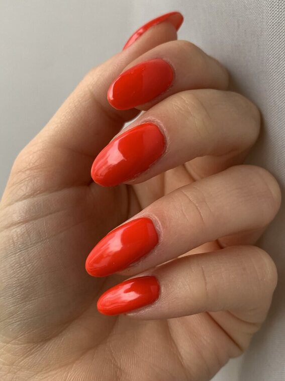

Capping

Al esmaltado semipermanente podemos agregarle caaping: una técnica con la cual se refuerza la base. Es ideal para uñas quebradizas y también para quienes quieran lograr un mayor largo de sus uñas naturales. No se coloca en extensión sino que se acompaña y fortalece el crecimiento de la uña propia. Puede hacerse con diferentes materiales. En este caso lo hacemos con bases semipermanente
Ver en YouTube